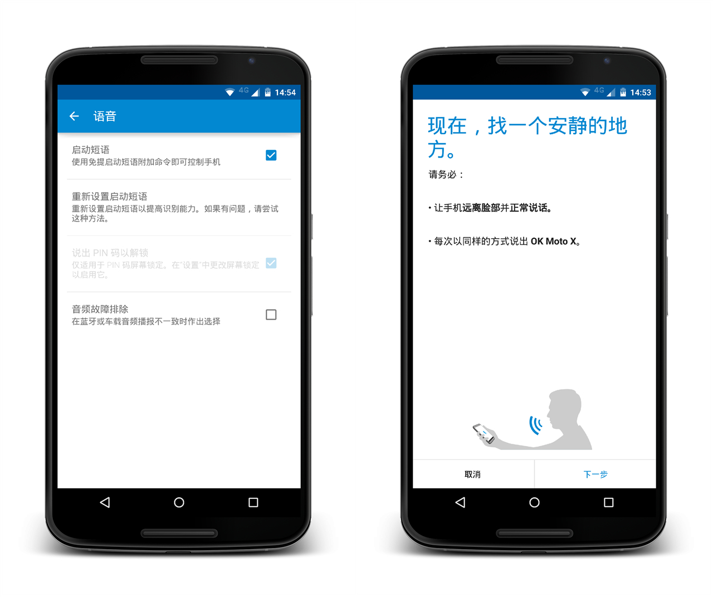

我的 Moto X Pro 成功刷入 Android 8.0 吃上奥利奥
京少 QQ2239298161
第一步 解锁 Bootloader
解锁 Moto X Pro 的 BL：详细教程在此，全程免费，解锁不求人
第二步 刷入 Recovery
通过 adb 刷入【京少特制 TWRP Recovery】编译自TeamWin最新3.1.1-0，默认中文，优化选项
第三步 刷入 Android O 卡刷包
按住音量-键开机进入 Recoery，双Wipe后，刷入【京少特制 Android 8.0】后开机即可

我的 Moto X Pro 可以刷任何 Nexus 6 的ROM
京少
第一步 解锁 Bootloader
解锁 Moto X Pro 的 BL：详细教程在此，全程免费，解锁不求人
第二步 线刷 Recovery
通过 adb 刷入【京少特制 TWRP Recovery】编译自TeamWin最新3.1.1-0，默认中文，优化选项，Moto X Pro 成功变身 Nexus 6
第三步 卡刷 Nexus 6 任意 ROM
按住音量-键开机进入 Recoery，双Wipe后，卡刷【任何一款Nexus 6的ROM】ROM请自行从网上下载
第四步 卡刷 特供内核补丁
在众多开发者的优秀内核中选一款自己喜欢的【京少特制内核补丁】卡刷后开机即可，带MOTO特性高级手势，带SuperSU获取ROOT权限，支持6.x、7.x、8.x系统
你可能不知道 Nexus 6 这些优秀的 ROM 及内核
京少
推荐 Nexus 6 最受网友欢迎 ROM：Android 7.1.2为主
Pure Nexus：介绍
Lineage OS：介绍
Nitrogen OS(简称NOS)：介绍
Resurrection Remix(简称RR)：介绍
crDroid：介绍
魔趣(Mokee)：介绍
Vanilla：介绍
推荐 Nexus 6 最受网友欢迎内核
FrancoKernel：介绍
ElementalX：介绍
Sigma：介绍
Flash：介绍
B14CKB1RD：介绍
Pure：介绍
让 Moto X Pro 更省电 阻止全家桶请用：黑域
京少
软件介绍
黑域通过事件智能判断您是否在使用应用，当您打开某个应用，使用完退出（如按“返回”）以后，黑域会待机它；待机超时，或者从最近列表划掉它，黑域会强行停止它。对于任何没有打开界面的唤醒，只要您没有打开过，都将强行停止它。同时，您也可以为应用设置“允许同步”，它们有不可取消的通知，或有前台服务时不会处理它；有通知，或者在后台运行时，至多只会待机它。
黑域支持 Android 5.0 到 Android O DP4，不需要 ROOT 也不用解锁，但是依赖“开发者选项”中的“USB调试”。
[酷安下载页]
补丁版黑域
群友一致推荐这个免费版本的黑域，感谢作者的付出，
黑域3.1.2-844补丁版APK下载
黑域补丁全自动制作工具作者页
补丁版黑域通过注入services.jar来实现功能，对于不同的ROM补丁不通用，同款ROM更新后如果涉及Framworks代码改动，也需要重新制作补丁。如果自己不会制作，请到各大社区寻找对应ROM版本的补丁，或者进群让热心网友帮忙
希望获取刷机包的同学，可申请加入测试QQ群：xxxxxxx，方便测试交流及反馈
非营利性个人公益项目，纯兴趣驱动，绝不收取任何费用，欢迎志愿者参与
刷机风险自担，项目参与者、本网站及其所有者不承担任何责任及后果
警告：在没解锁BL情况下线刷非Moto X Pro包，极有可能变砖机！
一般刷机问题可线刷官方底包修复：下载地址
本站无意冒犯任何原作者所拥有之版权及合法权利，如有疑问请联系我
©2017 网站版权遵循WTFPL，欢迎转载